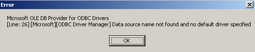
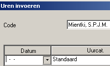

Ultimo op thuis PC
Installatie+installatie handleiding
Op zich ging de (deel-)installatie goed. Ik had echter een probleem omdat de eerste keer de netwerk drives niet aan te koppelen waren. Na herstarten van de PC wel, waarschijnlijk dus een VPN probleem.
Enkele kleine opmerkingen m.b.t. de handleiding
- aankoppelen van WINs riep bij wat vragen op. Waarom kun je niet gewoon 10.11... etc via ADD toevoegen aan het lijstje ? Blijkbaar als je het via import doet, zie je nog steeds die 2 adressen niet in het WINS scherm. Dit gaf bij mij nogal wat wantrouwen, dus even melden in de installatie
- Op pag 3/3 item 3 en 4 staat "map "y:\\....", maar ik heb helemaal geen map Y:
- de snelkoppeling geeft helemaal geen herkenbaar icoontje, het lijkt er in eeste instantie dus op dat het niet werkt, misschien goed om dat even te vermelden
- hoofdstuk problemen, hier moet weer een file van een netwerkdrive worden gehaald, welke je zojuist hebt losgekoppeld, terwijl je betreffende bestand ook al naar je harddisk had gekopieerd (MSCOMCT2.OCX) ;-)
Gebruik van Ultimo
- opstarten duurt inderdaad erg lang
- ik heb het idee dat ik default waarden mis, als ik jaaruren opvraag, dacht ik dat je een standaard periode kreeg, maar ik moet de periode geheel zelf kiezen
- toen maar eens geprobeerd uren in te voeren, want daar heb ik de meeste moeite mee, en toen hield het op :-) Bij de vraag van ultimo of de data moest worden opgeslagen, kreeg ik onderstaand fout venster (ja ik ODBC_INI.REG laten registreren).

Nee toch niet, na het wegklikken van het foutvenster, bleek de data wel opgeslagen te zijn !!
In onderstaande scherm werkt het pulldown menutje van de datum niet (MSCOMCT2.ocx gekopieerd en ultimo herstart),
heel vervelend.

Beveiliging ??
Als ik enkel VPN opstart en mijn PC verlaat, schakelt VPN zich (binnen 10 miunten of op de schermbeveiliging ??) uit.
Ik vermoed dat dit een beveiliging is.
Als ik mijn PC verlaat en ultimo heb openstaan, blijft VPN open.
Met Ultimo lijkt deze beveiliging dus uitgeschakeld.